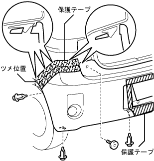
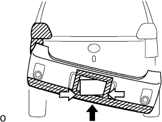
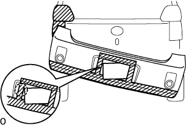
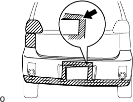
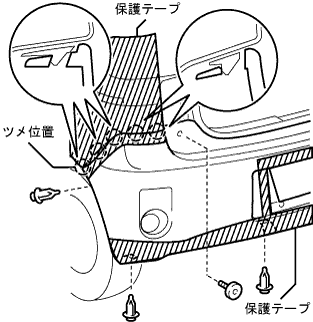

リヤバンパー 取り付け |
| 1. リヤバンパ カバー取り付け（ライセンスプレート標準） |
ナットでリフレックスリフレクタを取り付ける。
クリップ2個のかん合を合わせ、リヤバンパサイドシールLH、リヤバンパサイドシールRHを取り付ける。
スクリューおよびクリップのかん合をあわせ、リヤバンパサイドリテーナLH、リヤバンパサイドリテーナRH、リヤパンパサイドサポートLH、リヤパンパサイドサポートRHをボデーにとり付ける。
リヤバンパカバー開口部の回りおよびクォータパネルに保護テープを貼る。
リヤバンパカバーを持ち上げ、ライセンスプレートの上側をバンパ開口部より通す。
|  |
リヤバンパサイド部のツメのかん合を合わせ、リヤバンパカバー下部の4個、サイド部2個のクリップでリヤバンパカバーを取り付ける。
リヤバンパクッション2個をトルクスレンチ(Ｔ30)を使い取り付ける。
保護テープを取りはずす。
| 2. リヤバンパ カバー取り付け（ライセンスプレート字光式） |
ナットでリフレックスリフレクタを取り付ける。
クリップ2個のかん合を合わせ、リヤバンパサイドシールLH、リヤバンパサイドシールRHを取り付ける。
スクリューおよびクリップのかん合をあわせ、リヤバンパサイドリテーナLH、リヤバンパサイドリテーナRH、リヤパンパサイドサポートLH、リヤパンパサイドサポートRHをボデーにとり付ける。
リヤバンパカバーの下部と開口部の回りおよびクォータパネルに保護テープを貼る。
リヤバンパカバーを持ち上げ、リヤバンパカバーを斜めにする。
|  |
ライセンスプレートの下側をバンパ開口部より通す。
|  |
リヤバンパカバーを斜めのまま上げ、ライセンスプレート上部を凹ませリヤバンパカバー開口部より通す。
|  |
リヤバンパカバーを真っ直ぐにしながらライセンスプレートの右上をリヤバンパカバー開口部より通す。
|  |
リヤバンパサイド部のツメのかん合を合わせ、リヤバンパカバー下部の4個、サイド部２個のクリップでリヤバンパカバーを取り付ける。
リヤバンパクッション2個をトルクスレンチ(Ｔ30)を使い取り付ける。
保護テープを取りはずす。
| 3. ライセンスプレート ランプASSY取り付け |
コネクタを接続し、ツメのかん合を合わせライセンスプレートランプASSYを取り付ける。